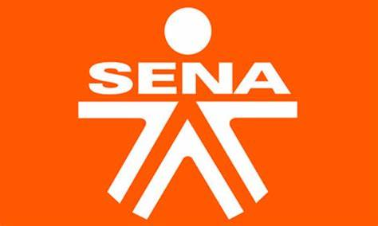

Sobre mí
Mi nombre es Julian Osorio soy un apasionado de la programación con experiencia en el desarrollo de soluciones eficientes. Me considero una persona cumplida y respetuosa, comprometida con la excelencia en cada proyecto. Busco oportunidades para aplicar mis habilidades y contribuir al éxito de un equipo dinámico.
Educación
- 2022 - Tecnico en Sena.
- 2024 - JP Java Programming Learner en Oracle.
Experiencia
- Conekta junio 2022 julio 2023 Proporcioné soporte técnico a clientes, resolviendo problemas relacionados con software y hardware. Capacité a nuevos empleados en el uso de herramientas internas y procedimientos de atención al cliente. Alcancé un índice de satisfacción del cliente del 95% mediante la atención efectiva y la resolución rápida de problemas.
Contacto
Puedes contactarme a través de mi correo electrónico o a traves de mi número de telefono 3125187623.